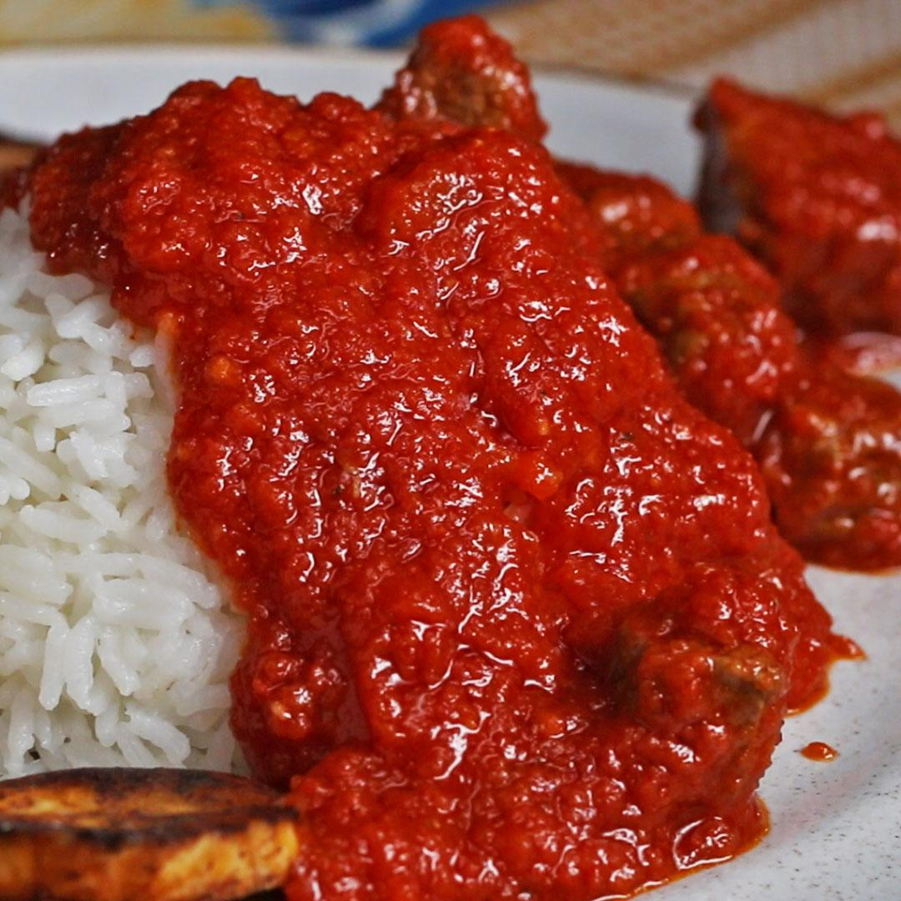

Nigerian Rice and Stew

Oh reader, heed my words!
For I bring thee news of a culinary delight, which shall leave thy senses aflutter and thy taste buds enraptured.
Nigerian Rice and Stew, I speak of, a dish that shall awaken thy palate with a symphony of flavors and aromas that shall dance upon thy tongue and captivate thy senses.
The marriage of tender rice and spicy, rich stew shall leave thee begging for more, and thou shalt find thyself lost in the magic of this delicious and satisfying meal.
So let us venture forth, my friend, and discover why thou shalt love this dish, for its taste is surpassed only by its simplicity and ease of preparation.
Let us make, together, this masterpiece of the culinary arts, and let us bask in its glory!
Ingredients
- Five ripe plums, chopped and parted
- Two Red Bell Peppers, minced
- Half a Red Onion, minced
- Half a Red Onion, sliced fine
- Two Habanero Peppers, chopped
- Six Cloves of Garlic, minced
- Twelve ounces of Tomato Paste
- A tablespoon of Salt, with an added teaspoon divided
- One and a half teaspoon of Black Pepper, divided
- Half a cup of water, to add luster
- A Cup of Vegetable Oil, to fry
- One and a half pound of Flank Steak, cut into strips
- One teaspoon of fresh Rosemary, for aroma
- One teaspoon of Paprika, for color
- One teaspoon of Curry Powder, for taste
- Two Cubes of Beef Bouillon, to season
- One Bay Leaf, for flavor
- White Rice, cooked and ready to be served
- Fried Plantain, a side dish
- Scallion, for garnish
- Fresh Parsley, to garnish.
Hark! Thou, gentle reader, lendeth thine ear to the steps that shall bring forth a dish of delight, Rice and Stew.
Steps
- To make this most wondrous dish of Rice and Stew, gather ye ingredients: Four chopped plum tomatoes, red bell peppers chopped,
onion chopped red, habanero peppers, cloves of garlic, tomato paste, one tablespoon of salt, a teaspoon of pepper, and water.
In a food processor or blender, blend these till smooth doth appear.
- In a large pot, heat the oil of the vegetables and let it sizzle.
- Then add the remaining chopped tomato, sliced onion, salt and pepper, stirring constantly until fragrant it be.
- The steak, seasoned with rosemary, paprika, curry powder, and bouillon cubes, cook in the pot until golden brown and fully done.
- Pour the blended mixture of tomatoes and peppers, with a bay leaf, into the pot.
- Boil it over high heat, and let it simmer covered, at low heat for twenty minutes, till it thickens to your delight.
- Remove the bay leaf, and let the stew rest for ten minutes.
- Serve the stew with white rice, and fried plantains, if desired, garnish with scallions and parsley.
- Enjoy, fair reader, this feast of flavors!